승강기기사 (2021-09-12 기출문제)
1과목: 승강기 개론
1. 카의 위치에 따라 발생하는 이동케이블과 로프의 무게 불균형을 보상하기 위하여 설치하는 것은?
- 균형추
- 균형 체인
- 제어 케이블
- 균형 클로저
(정답률: 88%)

2. 로프식 엘리베이터의 권상 도르래와 와이어로프의 미끄러짐 관계를 설명한 것 중 잘못된 것은?
- 로프가 감기는 각도(권부각)가 작을수록 미끄러지기 쉽다.
- 카의 가속도 및 감속도가 클수록 미끄러지기 쉽다.
- 카측과 균형추측의 로프에 걸리는 장력비가 작을수록 미끄러지기가 쉽다.
- 로프와 권상 도르래의 마찰계수가 작을수록 미끄러지기가 쉽다.
(정답률: 76%)
3. 에스컬레이터의 디딤판(스텝)의 크기에 대한 설명 중 옳은 것은?
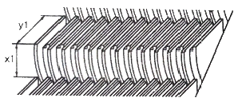
- 디딤판(스텝)의 깊이(y1)는 0.28m 이상이고, 디딤판(스템)의 높이(x1)는 0.18m 이하이어야 한다.
- 디딤판(스텝)의 깊이(y1)는 0.36m 이상이고, 디딤판(스템)의 높이(x1)는 0.22m 이하이어야 한다.
- 디딤판(스텝)의 깊이(y1)는 0.38m 이상이고, 디딤판(스템)의 높이(x1)는 0.24m 이하이어야 한다.
- 디딤판(스텝)의 깊이(y1)는 0.42m 이상이고, 디딤판(스템)의 높이(x1)는 0.28m 이하이어야 한다.
(정답률: 83%)
4. 균형추(Counter Weight)의 오버밸런스율을 적절하게 하여야 하는 이유로 가장 타당한 것은?
- 승강기의 출발을 원활하기 하기 위하여
- 승강기의 속도를 일정하게 하기 위하여
- 승강기가 정지할 때 충격을 없애기 위하여
- 트랙션비를 개선하여 와이어로프가 도르래에서 미끄러지지 않도록 하기 위하여
(정답률: 89%)
5. 에스컬레이터를 하강방향으로 공칭속도 0.65m/s 로 움직일 때 전기적 정지장치가 작동된 시간부터 측정할 경우 정지거리는 얼마를 만족하여야 하는가?
- 0.1m 에서 0.8m 사이
- 0.2m 에서 1.0m 사이
- 0.3m 에서 1.3m 사이
- 0.4m 에서 1.5m 사이
(정답률: 76%)
6. 승강기 안전관리법령에 따라 엘리베이터에서 정전시에 작동되는 비상등의 조도와 점등 시간에 관한 기준으로 옳은 것은?
- 10lx 이상의 조도로 30분 이상 점등되어야 한다.
- 10lx 이상의 조도로 1시간 이상 점등되어야 한다.
- 5lx 이상의 조도로 30분 이상 점등되어야 한다.
- 5lx 이상의 조도로 1시간 이상 점등되어야 한다.
(정답률: 84%)
7. 유압식 엘리베이터 중 간접식과 비교하여 직접식의 일반적인 특징에 속하는 것은?
- 실린더의 점검이 용이하다.
- 부하에 의한 카바닥의 빠짐이 비교적 크다.
- 실린더를 설치할 보호관이 불필요하다.
- 승강로의 평면 치수를 작게 할 수 있다.
(정답률: 64%)
8. 튀어오름 방지장치(제동 또는 록다운 장치)를 설치해야 하는 엘리베이터는 정격 속도가 몇 m/s를 초과할 경우인가?
- 3.0
- 3.5
- 4.0
- 4.5
(정답률: 66%)
9. 완충기에 대한 설명으로 틀린 것은?
- 에너지 분산형 완충기는 작동 후에는 영구적인 변형이 없어야 한다.
- 에너지 분산형 완충기는 엘리베이터 정격속도와 상관없이 사용될 수 있다.
- 에너지 축적형 완충기는 유체의 수위가 쉽게 확인될 수 있는 구조이어야 한다.
- 정격속도 60m/min 이하의 엘리베이터는 운동에너지가 작아서 선형 또는 비선형 특성을 갖는 에너지 축적형 완충기를 사용하기에 적합하다.
(정답률: 68%)
10. 로프 꼬임에 대한 설명으로 옳은 것은?
- 스트랜드의 꼬는 방향과 로프의 꼬는 방향을 반대로 한 것을 랭 꼬임이라 한다.
- 스트랜드의 꼬는 방향과 로프의 꼬는 방향이 동일한 것이 보통 꼬임이다.
- 랭 꼬임은 보통 꼬임에 비하여 킹크(kink)를 잘 발생하지 않는다.
- 보통 꼬임은 랭 꼬임에 비하여 국부적인 마모가 발생하여 수명이 다소 짧다.
(정답률: 72%)
11. 자동차용이나 대형 화물용 엘리베이터에서 카실을 완전히 열 필요가 있어서 사용되는 개폐방식은?
- 상승 개폐(UP)
- 중앙 개폐(CO)
- 측면 개폐(SO)
- 여닫이 방식(SWING DOOR)
(정답률: 77%)
12. 권동식 권상기에 비하여 트랙션 권상기의 장점이라고 볼 수 없는 것은?
- 소요 동력이 작다.
- 승강 행정에 제한이 비교적 적다.
- 미끄러짐이나 마모가 잘 발생하지 않는다.
- 권과(지나치게 감기는 현상)를 일으키지 않는다.
(정답률: 55%)
13. 엘리베이터의 군관리 방식에 대한 설명으로 옳지 않은 것은?
- 위치표시기를 설치하지 않고, 대신에 홀랜턴으로 하기도 한다.
- 엘리베이터가 3~8대가 병설될 때 개개의 카를 합리적으로 운행·관리하는 방식이다.
- 개개의 부름에 대하여 가장 가까이 있는 카가 응답한다.
- 특정 층의 혼잡 등을 자동적으로 판단하여 서비스 층을 분할할 수도 있다.
(정답률: 61%)
14. 유압회로의 부품에 대한 설명으로 틀린 것은?
- 체크밸브(checkvalve) : 오일이 실린더로 들어가는 곳에 설치되어 파이프나 호스가 파손되었을 경우 카가 추락하는 것을 방지하는 밸브
- 사이렌서(silencer) : 펌프나 제어밸브에서 발생한 진동과 소음을 흡수하기 위한 장치
- 릴리프 밸브(relief valve) : 압력 조정 밸브로서 유압회로내의 압력이 이상 상승하는 것을 방지하는 밸브
- 스트레이너(strainer) : 유압유 내의 이물질을 걸러내는 장치
(정답률: 77%)
15. 구조가 간단하나 착상오차가 크므로 대략 정격속도 30m/min 이하의 엘리베이터에 적용하는 속도제어방식은?
- 교류 1단 속도제어
- 교류 2단 속도제어
- 교류 귀환 제어
- 가변전압 가변주파수 제어
(정답률: 79%)
16. 엘리베이터가 과속된 경우, 과속스위치가 이를 검출하여 동력 전원 회로를 차단하고, 전자 브레이크를 작동시켜서 과속조절기 도르래의 회전을 정지시켜 과속조절기 도르래 홈과 로프 사이의 마찰력으로 비상 정지시키는 과속조절기의 종류는?
- 마찰정지형 과속조절기
- 디스크형 과속조절기
- 플라이 볼형 과속조절기
- 유압식 과속조절기
(정답률: 70%)
17. 엘리베이터의 정격속도가 매 분당 180m이고, 제동소요 시간이 0.3초인 경우의 제동거리는 몇 m 인가? (단, 엘리베이터 속도는 정격속도에서 선형적으로 감소한다.)
- 0.25
- 0.45
- 0.65
- 0.85
(정답률: 52%)
18. 카 내부에 있는 사람에 의한 카문의 개방을 제한하기 위해 엘리베이터 카가 운행 중일 때 카 문의 개방은 최소 몇 N 이상의 힘이 요구되어야 하는가?
- 40
- 50
- 60
- 70
(정답률: 78%)
19. 소방구조용 엘리베이터의 일반적인 요구조건에 관한 설명으로 옳지 않은 것은?
- 운행 속도는 0.8m/s 이상이어야 한다.
- 소방관이 조작하여 엘리베이터 문이 닫힌 이후부터 60초 이내에 가장 먼 층에 도착하여야 한다.
- 정전 시에는 보조 전원공급장치에 의해 엘리베이터를 2시간 이상 운행시킬 수 있어야 한다.
- 소방운전 시 모든 승강장의 출입구 마다 정지할 수 있어야 한다.
(정답률: 81%)
20. 단일 승강로에 두 대의 엘리베이터를 이용하면서 각각 독립적으로 운행되는 고효율 엘리베이터는?
- 트윈 엘리베이터
- 전망용 엘리베이터
- 더블데크 엘리베이터
- 조닝방식 엘리베이터
(정답률: 78%)
2과목: 승강기 설계
21. 엘리베이터에서 피트 바닥은 전 부하 상태의 카가 완충기에 작용하였을 때 완충기 지지대 아래에 부과되는 정하중의 최소 몇 배를 지지할 수 있어야 하는가?
- 4배
- 5배
- 8배
- 10배
(정답률: 72%)
22. 엘리베이터의 수평 개폐식 문 중 자동 동력 작동식 문이 닫힐 경우 그 운동에너지는 몇 J 이하여야 하는가? (단, 승강기의 각종 안전장치는 이상 없이 정상 작동하는 경우로 한정한다.)
- 5J
- 6J
- 8J
- 10J
(정답률: 61%)
23. 권동식(드럼식) 권상기의 단점이 아닌 것은?
- 권상하중 대비하여 소요동력이 크다.
- 높은 행정에 적용하기 곤란하다.
- 설치 면적을 과대하에 점유한다.
- 지나치게 감기거나 풀릴 위험이 있다.
(정답률: 57%)
24. 층고가 3.5m인 지상 10층 건물에 엘리베이터 1대가 설치되어 있다. 엘리베이터의 정격속도는 90m/min일 때 1층에서 10층까지 주행하는데 걸리는 주행시간은 약 몇 초인가? (단, 1층에서 10층 주행시 예상정지수는 5회, 정격속도에 따른 가속시간은 2.2초이고, 도어개폐시간, 승객출입시간, 그 외 각종 손실시간은 제외한다.)
- 28
- 30
- 32
- 34
(정답률: 52%)
25. 그림과 같은 도르래 장치에서 로핑 비율과 장력 P와 하중 W의 관계로 옳은 것은? (단, 로핑 비율은 “P의 하강거리 : W의 상승거리”로 나타낸다.)
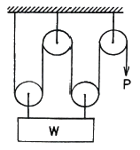
- 2:1로핑, P=W/2
- 3:1로핑, P=W/3
- 4:1로핑, P=W/4
- 5:1로핑, P=W/5
(정답률: 75%)
26. 권상도르래의 지름이 720mm이고, 감속비가 45:1, 주파수 60Hz, 전동기 극수 4, 로핑은 1:1 일 경우, 이 엘리베이터의 속도는 약 몇 m/min 인가? (단, 슬립은 없는 것으로 한다.)
- 60
- 75
- 90
- 1⑤
(정답률: 50%)
27. 파이널 리미트 스위치의 일반적인 요구조건에 관한 설명으로 틀린 것은?
- 권상구동식 및 유압식 엘리베이터의 경우 주행로의 최상부 및 최하부에서 작동하도록 설치되어야 한다.
- 파이널 리미트 스위치는 카 또는 균형추가 완충기에 충돌하기 전에 작동되어야 한다.
- 파이널 리미트 스위치와 일반 종단정지장치는 독립적으로 작동되어야 한다.
- 파이널 리미트 스위치는 우발적인 작동의 위험 없이 가능한 최상층 및 최하층에 근접하여 작동하도록 설치되어야 한다.
(정답률: 59%)
28. 길이 ℓ, 단면적 A인 균일 단면 봉이 인장하중 W를 받아 λ만큼 늘어났을 때 상관관계를 옳게 나타낸 것은? (단, E는 세로탄성계수이고, 후크의 법칙을 만족한다.)
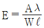
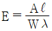
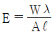
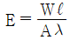
(정답률: 61%)
29. 엘리베이터 피트의 피난공간 기준에서 피난 자세에 따라 피난 공간 높이의 기준이 달라지는데 각 자세별로 피난공간 높이 기준이 옳게 짝지어진 것은? (단, 주택용 엘리베이터는 제외한다.)
- 서 있는 자세 : 2m, 웅크린 자세 : 1m
- 서 있는 자세 : 2m, 웅크린 자세 : 1.2m
- 서 있는 자세 : 1.8m, 웅크린 자세 : 1m
- 서 있는 자세 : 1.8m, 웅크린 자세 : 1.2m
(정답률: 62%)
30. 카 틀 상부체대 중앙에 현수 도르래가 1개 설치된 경우 그림과 같이 양단지지보 중앙에 하중(W)이 작용하는 것으로 볼 수 있다. 이때 상부체대의 최대 변형량(δ, m)을 구하는 식으로 옳은 것은? (단, W는 카 측 총 중량(N), E는 상부체대 재료의 세로탄성계수(N/m2), L는 상부체대 전길이(m), I는 상부체대의 단면 2차 모멘트(m4)이다. 또한 변형량은 W가 작용하는 방향으로의 변형량을 말한다.)
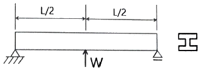
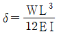
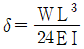
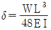
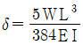
(정답률: 62%)
31. 과속조절기 로프에 대한 설명으로 틀린 것은?
- 과속조절기 로프의 최소 파단 하중은 권상 형식 과속조절기의 마찰 계수(μmax) 0.2를 고려하여 과속조절기가 작동될 때 로프에 발생하는 인장력에 8 이상의 안전율을 가져야 한다.
- 과속조절기의 도로래 피치 직경과 과속조절기 로프의 공칭 직경 사이의 비는 30 이상이어야 한다.
- 과속조절기 로프 및 관련 부속부품은 추락방지안전장치가 작동하는 동안 제동거리가 정상적일 때보다 더 길더라도 손상되지 않아야 한다.
- 과속조절기 로프는 추락방지안전장치로부터 쉽게 분리되지 않아야 한다.
(정답률: 49%)
32. 소방구조용 엘리베이터는 갇힌 소방관을 구출하기 위한 비상구출문을 카 지붕에 설치해야 하는데, 비상구출문에 대한 각각의 이중천장을 열기 위해 가해야 하는 힘은 몇 N 이하여야 하는가?
- 200
- 250
- 300
- 350
(정답률: 50%)
33. 모듈이 4인 스퍼 외접기어의 잇수가 각각 30, 60 이라고 할 때 양 축간의 중심거리는?
- 90mm
- 180mm
- 270mm
- 360mm
(정답률: 63%)
34. 전동기 동력이 11kW 인 3상 유도 전동기에 대하여 예비전원 소요 용량을 주어진 조건에 의하여 산출하면 약 몇 kVA 가 되는가? (단, 전동기 역률은 55%, 최대 가속전류는 정격전류의 2.8배이고, 소요 예비전원 용량은 가속 시 용량의 1.6배를 적용하며, 주전압은 380V 이다.)
- 76
- 90
- 108
- 121
(정답률: 33%)
35. 공칭회로의 전압이 500V 초과인 경우 기준에 따라 절연 저항값을 측정할 때 그 값은 몇 MΩ 이상이어야 하는가?
- 0.3
- 0.5
- 0.7
- 1.0
(정답률: 65%)
36. 장애인용 엘리베이터의 승강장 바닥과 승강기 바닥 사이의 틈새는 최대 몇 mm 이하이어야 하는가?
- 45
- 40
- 35
- 30
(정답률: 68%)
37. 로프식 엘리베이터의 속도제어 방식 중 기동과 주행은 고속권선으로, 감속과 착상은 저속권선으로 속도를 제어하는 방식은?
- 교류1단 속도제어
- 교류2단 속도제어
- 직류1단 속도제어
- 직류2단 속도제어
(정답률: 80%)
38. 유도전동기가 엘리베이터의 동력용 전동기로 가장 많이 사용되는 이유가 아닌 것은?
- 속도 제어성이 우수하다.
- 구조가 간단하고 견고하다.
- 고장이 적고 가격이 싸다.
- 취급이 용이하다.
(정답률: 49%)
39. 엘리베이터의 정격속도가 120m/min 일 때 에너지 분산형 완충기의 행정(stroke)거리는 약 몇 mm 이상이어야 하는가?
- 270
- 290
- 310
- 330
(정답률: 47%)
40. 점차 작동형 추락방지안전장치가 적용된 엘리베이터의 정격속도가 150m/min 이다. 이 엘리베이터의 과속조절기가 작동되어야 하는 엘리베이터 속도 구간으로 옳은 것은?
- 2.875 m/s 이상 3.225 m/s 미만
- 2.875 m/s 이상 3.125 m/s 미만
- 2.750 m/s 이상 3.225 m/s 미만
- 2.750 m/s 이상 3.125 m/s 미만
(정답률: 47%)
3과목: 일반기계공학
41. 그림과 같은 캠에서 ⓐ부분의 명칭으로 옳은 것은?
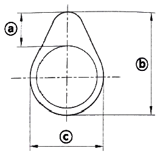
- 캠 로브
- 캠 양정
- 캠 프로파일
- 캠 노즈
(정답률: 60%)
42. V벨트의 마찰계수가 0.4, V벨트의 단면 각도가 40° 일 때, 유효 마찰계수의 값은?
- 0.326
- 0.378
- 0.459
- 0.557
(정답률: 27%)
43. 펌프의 캐비테이션 방지대책으로 틀린 것은?
- 펌프의 설치위치를 될 수 있는 대로 낮춘다.
- 단 흡입이면 양 흡입으로 고친다.
- 2대 이상의 펌프를 설치한다.
- 펌프의 회전수를 높인다.
(정답률: 67%)
44. 기계공작법의 소성가공에 대한 설명으로 틀린 것은?
- 소성변형을 주어 원형과 다른 제품을 만든다.
- 대량생산이 곤란하고 균일한 제품을 만들 수 없다.
- 열간가공은 재결정 온도 이상으로 가열하여 가공한다.
- 압연, 압출, 인발, 판금, 전조 가공 등이 있다.
(정답률: 70%)
45. 브레이크의 마찰계수를 μ, 드럼의 원주 속도를 v, 접촉면의 압력을 p라 할 때 브레이크 용량을 계산하는 식은?
- μ/pv
- πμ/pv
- μpv
- πμpv
(정답률: 65%)
46. 원형 단면의 단순보에 균일분포하중이 작용할 때 최대 처침량에 대한 설명 중 틀린 것은?
- 균일분포하중에 비례한다.
- 보 길이의 4승에 비례한다.
- 세로 탄성계수에 반비례한다.
- 단면관성모멘트의 4승에 반비례한다.
(정답률: 44%)
47. 공작기계로 가공된 평면이나 원통면 등을 정밀하게 다듬질하기 위한 수공구는?
- 스크레이퍼
- 다이스
- 정
- 탭
(정답률: 61%)
48. 유압기기와 관련하여 체크밸브, 릴리프 밸브 등의 입구쪽 압력이 강하하고, 밸브가 닫히기 시작하여 밸브의 누설량이 어느 규정의 양까지 감소했을 때의 압력은? (단, 유압 및 공기압 용어 KS B 0120에 의한다.)
- 서지 압력
- 파일럿 압력
- 리시트 압력
- 크랭킹 압력
(정답률: 46%)
49. 일반 주철에 관한 설명으로 틀린 것은?
- Fe-C 합금에서 C의 함량이 약 2.11 ~ 6.68%인 것을 말한다.
- 압축강도에 비해 인장강도가 크다.
- 마찰저항이 크고 절삭성이 좋다.
- 용융점이 낮고 유동성이 좋다.
(정답률: 50%)
50. 압력제어밸브 중 회로 내의 압력이 설정값에 도달하면 오일의 일부 또는 전부를 배출구로 되돌려서 회로 내의 압력을 일정하게 유지되게 하는 역할을 하는 밸브는?
- 리듀싱 밸브(Reducing valve)
- 시퀀스 밸브(Sequence valve)
- 릴리프 밸브(Relief valve)
- 언로더 밸브(Unloader valve)
(정답률: 71%)
51. 원형 단면 봉에 비틀림 모멘트가 작용할 때 발생하는 비틀림 각에 대한 설명으로 옳은 것은?
- 축 길이에 반비례한다.
- 전단탄성계수에 비례한다.
- 비틀림 모멘트에 반비례한다.
- 축 지름의 4승에 반비례한다.
(정답률: 38%)
52. 지름 110cm, 회전수 500rpm인 축에 묻힘 키를 폭 28mm, 높이 18mm, 길이 300mm로 설계하려고 한다면 키의 전단응력에 의한 최대전달동력(kW)은 약 얼마인가? (단, 키의 허용전단응력은 32MPa 이다.)
- 314
- 523
- 774
- 963
(정답률: 31%)
53. 타이타늄 합금의 기계적 성질에 관한 설명으로 옳은 것은?
- 비중이 10 으로 강보다 무겁다.
- 장시간 가열에 대한 열 안정성이 불량하다.
- 항공기나 자동차 엔진 재료로 사용이 불가능하다.
- 합금원소 첨가로 크리프강도와 피로강도가 높다.
(정답률: 67%)
54. 클러치, 캠, 기어 등의 소재 가공 시 강재의 표면만 경화시키는 표면경화법이 아닌 것은?
- 침탄법
- 질화법
- 제강법
- 청화법
(정답률: 55%)
55. 볼트 체결에 있어서 마찰각을 ρ, 리드각을 λ라고 할 때 나사의 효율(η)을 나타내는 식은?
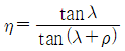
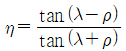
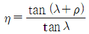
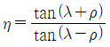
(정답률: 48%)
56. 다음 중 각 탄성계수와 푸와송의 비 μ, 푸아송의 수 m과의 관계를 나타낸 것으로 틀린 것은? (단, 가로 탄성계수는 G, 세로 탄성계수는 E, 체적 탄성계수는 K이다.)
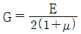
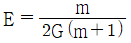
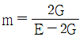
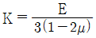
(정답률: 53%)
57. 아크(arc)용접에서 언더 컷(undercut)을 방지하는 일반적인 방법으로 틀린 것은?
- 용접전류를 높인다.
- 용접속도를 낮춘다.
- 짧은 아크 길이를 유지한다.
- 모재 두께 및 폭에 대하여 적합한 용접봉을 선택한다.
(정답률: 63%)
58. 다음 중 미세한 숫돌가루를 이용하여 표면을 매끈하게 만드는 가공법은?
- 선반
- 래핑
- 호빙
- 밀링
(정답률: 65%)
59. 양 끝을 고정한 연강 봉이 온도 22℃에서 가열되어 40℃가 되었다. 이때 재료 내부에 생기는 열응력(MPa)은 약 얼마인가? (단, 재료의 선팽창계수는 1.2×10-5/℃, 세로탄성계수는 210GPa 이다.)
- 45.4
- 47.9
- 50.4
- 52.9
(정답률: 29%)
60. 주형 제작에 사용되는 탕구계(gating system)의 구성요소에 포함되지 않는 것은?
- 열풍로
- 주입구
- 라이저
- 탕도
(정답률: 54%)
4과목: 전기제어공학
61. 어떤 물체가 1초 동안에 50회전할 때 각속도(rad/s)는?
- 50π
- 60π
- 100π
- 120π
(정답률: 52%)
62. 어떤 전지에 5A의 전류가 10분간 흘렀다면 이 전지에서 발생한 전하량은 몇 C 인가?
- 1000
- 2000
- 3000
- 4000
(정답률: 65%)
63. 전압, 전류, 주파수 등의 양을 주로 제어하는 것으로 응답속도가 빨라야 하는 것이 특징이며, 정전압장치나 발전기 및 조속기의 제어 등에 활용하는 제어방법은?
- 서보기구
- 비율제어
- 자동조정
- 프로세스제어
(정답률: 54%)
64. 다음 블록선도로 제어계를 구성하여, 시간 t가 0 일 때, 계단함수 1/s를 입력하였다. 이때의 출력은?
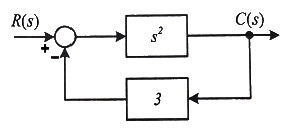
- 0
- 1/2
- 1/3
- 3
(정답률: 54%)
65. 150kVA 단상변압기의 철손이 1kW, 전 부하동손이 4kW이다. 이 변압기의 최대 효율은 몇 kVA의 부하에서 나타나는가?
- 25
- 75
- 100
- 125
(정답률: 46%)
66. 피드백 제어시스템의 피드백 효과로 옳지 않은 것은?
- 대역폭 증가
- 정확도 개선
- 시스템 간소화 및 비용 감소
- 외부 조건의 변화에 대한 영향 감소
(정답률: 64%)
67. 다음 중 절연저항을 측정하는데 사용되는 계측기는?
- 메거
- 저항계
- 켈빈브리지
- 휘스톤브리지
(정답률: 76%)
68. 60Hz, 8극, 8500W의 유도전동기가 있다. 전부하 시의 회전수가 855rpm일 때 전동기의 토크(kg·m)는 약 얼마인가?
- 7.21
- 8.43
- 8.92
- 9.35
(정답률: 32%)
69. 교류(Alternating current)를 나타내는 값 중 임의의 순간의 크기를 나타내는 것은?
- 최대값
- 평균값
- 실효값
- 순시값
(정답률: 69%)
70. 다음 회로의 전달함수
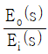
는? (단, 초기조건 eo(0) = 0 이다.)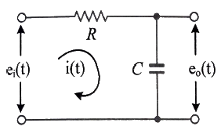
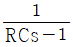
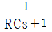
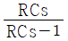
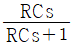
(정답률: 42%)
71. 그림과 같은 유접점 회로를 논리식으로 나타내면?
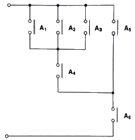
- (A1×A2×A3+A4)×(A5+A6)
- (A1×A2×A3)+A5+A6
- [(A1+A2+A3+A5)×A4]×A6
- [(A1+A2+A3)×A4+A5]×A6
(정답률: 62%)
72. 전기사용 장소의 사용전압이 380V인 전로의 전로와 대지 사이의 절연저항(MΩ)은 최소 얼마 이상이어야 하는가?
- 0.3
- 0.6
- 0.9
- 1
(정답률: 59%)
73. 피드백 제어계의 구성 요소 중 제어동작 신호를 받아 조작량으로 바꾸는 역할을 하는 것은?
- 설정부
- 비교부
- 제어요소
- 검출부
(정답률: 60%)
74. 세라믹 콘덴서 소자의 표면에 103K라고 적혀 있을 때 이 콘덴서의 용량은 약 몇 ㎌ 인가?
- 0.01
- 0.1
- 103
- 103
(정답률: 56%)
75. 저항에 전류가 흐르면 열이 발생하는 열작용과 가장 밀접한 관계가 있는 법칙은?
- 줄의 법칙
- 쿨롱의 법칙
- 옴의 법칙
- 페러데이의 법칙
(정답률: 62%)
76. 평형 3상회로에서 상당 저항이 40Ω, 리액턴스가 30Ω인 3상 유도성 부하를 Y결선으로 결선한 경우 복소전력(VA)은? (단, 선간전압의 크기는 100√3 V 이다.)
- 160 + j120
- 480 + j360
- 960 + j720
- 1440 + j1080
(정답률: 46%)
77. 논리식
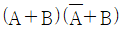
와 등가인 것은?- A
- B
- AB
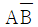
(정답률: 56%)
78. 다음 그림과 같은 다이오드 논리 게이트는?
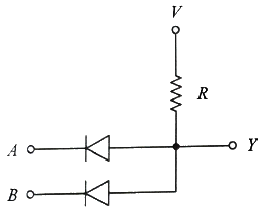
- AND
- OR
- NOT
- NOR
(정답률: 52%)
79. 다음 중 옴의 법칙에 대한 설명으로 옳지 않은 것은?
- 저항에 전류가 흐를 때 전압, 전류, 저항의 관계를 설명해 준다.
- 옴의 법칙은 저항으로 전류의 크기를 조절할 수 있음을 보여준다.
- 옴의 법칙은 저항에 의한 전압강하를 설명해 준다.
- 옴의 법칙을 이용하여 임피던스에 의한 전압강하는 설명할 수 없다.
(정답률: 67%)
80. 검출기기에서 검출된 온도를 전압으로 변환하는 요소의 종류는?
- 열전대
- 전자석
- 벨로우즈
- 광전다이오드
(정답률: 72%)